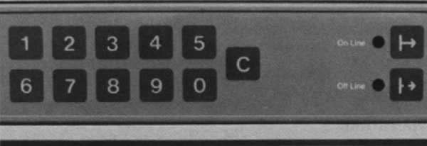

| Chapter 14 | Contents | Chapter 16 |
Chapter 15
The LN01 Laser Printer is a nonimpact page printer ideal for applications where print quality is important. Using electrophotographic technology, the LN01 prints one page at a time, up to a maximum of 12 pages per minute. The printing resolution of 300 by 300 dots per inch produces perfectly formed characters of even density and alignment.
The LN01 Laser Printer is the first in Digital's family of nonimpact printers. The demand for nonimpact printing is growing for several reasons. Nonimpact printing is quiet – there are no noisy paper feed mechanisms or striking hammers. Since nonimpact printers use regular cutsheet paper and standard paper shapes and sizes, it saves money. Because image resolution is high, the LN01 prints a sharp, clear character.
The following laser printers are available.
The LN01's main features are:
The LN01's laser printing process is relatively simple. The LN01 has a conductive drum that is uniformly charged. The charge is removed by the laser from all areas that are not needed for the page's image. This leaves a latent charge image on the drum. This latent image attracts a dry ink substance that is subsequently transferred to the paper. A thermal process fixes the image, making it permanent.
The LN01 has a printing resolution of 300 dots per inch both horizontally and vertically. Minimum print area and positional resolution are important factors to consider.
The minimum print area requirements are:
With positional resolution, characters (bit maps invoked with a single code) will be placed on even pixel positions in the scan direction (long edge of the paper). The positional resolution for characters is therefore 150 dots per inch in the scan direction and 300 dots per inch the other. Dots within a character are always 300 dots per inch. The LN01 rounds odd-numbered positions to the next lower even number.
Whether your application requires vertical (portrait) or horizontal (landscape) printing, color paper, or a range of paper stocks between 16 and 24 pounds, the LN01 laser printer can do it. It can even print up to 132 columns of standard lineprinter output in landscape mode on 21.6-by-27.9-centimeter (8.5-by-11-inch) paper.
Cutsheet paper is fed into the machine from two cassettes, each holding up to 250 sheets. You can select from three sizes of trays: standard, 21.6-by-27.9-centimeters (8.5-by-11-inches); legal, 21.6-by-35.6-centimeters (8.5-by-14-inches); or European, 21-by-29.7-centimeters (8.3-by-11.7-inches).
The output stacker holds approximately 500 sheets of paper and accommodates paper ranging from 16 to 24 pounds. When the output stacker is full, printing stops and a C4 status code appears. Printing restarts automatically when you empty the output stacker.
Best results are achieved by using 20-pound ordinary cutsheet paper. Digital LN01X-AB, 21.6-by-27.9-centimeter (8.5-by-11-inch) paper and Digital LN01X-AD, 21-by-29.7-centimeter (8.3-by-11.7-inch) paper or their equivalents yield optimal results. Digital does not recommend the use of gummed labels or transparency stock.
Not Applicable.
The following accessories, supplies, components, and spares are available for the LN01 Page Printer. Check with your sales representative of Digital's Installed-Base Group for the latest information.
| Part Number | Description |
|---|---|
| LN01X-AA | Toner, case of four bottles (enough for 20,000 copies) |
| Part Number | Description |
|---|---|
| LN01X-AE | 21.6 cm × 27.9 cm (8.5 in × 11 in) paper tray |
| LN01X-AF | 21.6 cm × 35.6 cm (8.5 in × 14 in) paper tray |
| LN01X-AH | A4 21.0 cm × 29.7 cm (8.3 in × 11.7 in) paper tray |
|  |
The front panel of the LN01 contains a numeric keypad, four control buttons, several status indicators, and a variety of control switches.
Online Button
Selects the on-line mode, illuminates the on-line indicator, and extinguishes the off-line
indicator.
Offline Button
Selects the off-line mode, illuminates the off-line indicators, and extinguishes the on-line
indicator.
Test Button
Allows off-line Image Output Terminal (IOT) diagnostics and Electronic Subsystem
(ESS), a printer controller, tests to be run by service personnel.
Status Display
A two-digit alphanumeric seven-element LED display that represents operational
status information. See the Operator Troubleshooting section of this chapter for
more information on common displays and their meanings.
Online Indicator
The LN01 is on-line when this indicator is illuminated with no error conditions
displayed (flashing display, normal error code, or DC).
Offline Indicator
When illuminated, this means the printer is off-line.
Power Supply Indicator
When illuminated, this means the power supply is functioning properly. The front
door must be opened to see this indicator.
Page Counter
A digital meter, which counts each sheet of paper that enters the paper path, is
installed inside the front cover.
Power On/Off
A two-position switch located behind the front cover allows the operator to engage
and disengage machine power.
The LN01 laser printer consists of two basic elements – an LN01 marking engine (also referred to as the Image Output Terminal – IOT) and an LN01 laser printer controller (also known as the Electronic Subsystem or ESS), integrated into a single unit.
The printer mechanism removes individual sheets of paper from a tray, transports the sheets via its paper path to the printing engine, then deposits the printed sheet into the receiving bin. Printing is accomplished by using a laser electrophotography process within the IOT. The IOT uses a drum whose surface has an electrosensitive material being capacitivity charged by the process of ionization. The charge is removed by the impingement of the modulated laser light. The removal of the charge results in a latent image impressed on the drum surface. The inking or toning medium is attracted to these areas of retained charge, adhere to the drum, and thus produce the pattern or image that is subsequently transferred to a sheet of paper.
The paper path then carries the printed sheet through a thermal operation that makes the deposited image permanent.
The LN01 uses the following special, nonprinting ASCII control codes. More detailed information can be found in the LN01 Programmers Reference Manual.
The horizontal tab character advances the active position to the next horizontal stop that is greater than the current active position but no greater than the right margin.
The linefeed character increments the active line, and causes the active column to be moved to the left margin. When the active line is incremented past the bottom margin, it sets the active line to the top margin of the next page.
The vertical tab character advances the active line to the next vertical tab stop that is greater than the current active line. If the bottom margin is exceeded, the active line is set to the top line of the next page. The active column is not changed.
The form feed character advances the active line to the top margin of the next page and sets the active position to the first character position of the first line. This causes the current page buffer to be printed.
The carriage return character causes the active column to be moved to the left margin.
The space character can be considered either a control character or a printable character. Its width is determined by the font set selected.
The cancel character indicates that the escape sequence is wrong and should be disregarded, and causes immediate sequence termination. Subsequent characters are not interpreted as part of the control or escape sequence and are processed normally.
The substitute character is used to indicate replacement of a character that could not be represented, and causes immediate sequence termination. The SUB character and subsequent characters are not interpreted as part of a control or escape sequence and are processed normally.
The escape characters are available to user-developed software for font assignment and invocation and to reset the printer to its initial state (RIS).
The LN01 Laser Printer has built-in self-test features for self-diagnosis. The status code indicator is prominently displayed on the front of the LN01. These status codes let you know if you need to:
An operator card, like the one found on many of today's office copiers, details how to turn on the power, set-up the printer, and add paper, and what the control panel indicators mean. With the LN01 Laser Printer, there are no bands or ribbons to change – or to wear out.
The moisture content of your paper can affect the smooth operation of the LN01. If the moisture content of your paper is less than six percent, the LN01 will operate properly. Moisture content above six percent can cause paper jams and changes in print uniformity. If you live in an area where high humidity is common, Digital recommends that you remove the paper from the LN01 at the end of the workday and store the paper in a dry environment or that you purchase an optional paper tray heater. Both methods will prevent the paper from absorbing excess moisture.
The page count meter counts every page delivered to the output tray. This meter indicates to service personnel when certain print-volume-dependent maintenance actions are necessary. It is also available for billing purposes if you wish to charge the cost of operation to different groups within your department or organization.
The control panel display is clearly visible and displays any abnormal condition, which helps you minimize unnecessary service calls. It also aids service personnel in isolating and repairing faults.
When the LN01 is powered on without the TEST button depressed, the technical representative can run a simple diagnostic that prints rules paper. By looking at the output, your service representative can detect faults.
When system power is turned on, the LN01 laser printer automatically enters the power-on state of its Online Mode. At that time, self-diagnosing programs are automatically executed to verify the integrity of the LN01 ESS's microprocessors, memory, and IOT interfaces. Successful execution of these diagnostics allows the LN01 printer to advance to its ready-to-print state, once the system achieves proper operating temperature. A summary sheet is then generated. If a failure is detected, the LN01 ESS posts a failure code on the Control Panel Status Display if the failure does not prevent it from doing so.
You or your service representative can request the running of on-line tests that exercise all components of the printer.
When ESS and IOT tests are active the LN01 does not respond to the host computer. These tests are performed on-line. When on-line tests are being performed, the host computer receives no reply if it tries to communicate with the LN01. The ESS/IOT tests use the LN01's page composition and dynamic font RAM storage. Starting an on-line test aborts any work in progress and requires the reloading of dynamic RAM fonts.
The ESS/IOT test includes calibration and character registration adjustment proof and all black and white page generation. The character proof pages are printed in the landscape ROM font.
The printer does not operate.
Print is too light.
Print is too dark.
Printed information is slanted or skewed.
Printed copy does not arrive in the output tray.
A flashing code – C3, C4, E2, E3, E4, and E5 – indicates that operator intervention is necessary.
The following documents contain more detailed information about the LN01 laser printer.
Also of interest are:
If you require information not contained in these documents, contact your local Digital representative, dealer, or distributor.
| Printing speed | Up to 12 (21.6 by 27.9 centimeters or 8½ by 11 inches) pages per minute |
| Recommended print volume | 15,000 pages per month (approximately 750 pages per day) |
| Paper feed | Two nonadjustable cassettes of standard 21.6 by 29.9 centimeter paper (8½ by 11 inch), 21-by-29.7 centimeters (8.3-by-11.7 inches) for European versions, holding up to 250 sheets per cassette (16 to 24 lb paper) |
| Paper sizes | |
| Standard | 21.6 cm by 29.9 cm (8½ in by 11 in) |
| Legal | 21.6 cm by 35.6 cm (8.5 in by 14 in) |
| European | 21 cm by 29.7 cm (8.3 in by 11.7 in) |
| Character sets | Two fixed-space fonts, one portrait and one landscape, each with 188 characters |
| Resolution | 300-by-300 dots per inch (horizontal and vertical) |
| Print columns | Up to 132 columns of standard lineprinter output on 21.6 by 29.9 centimeter paper (8½ by 11 inch paper) |
| Lines per inch | 6/8 U.S. and European |
| Characters per inch | |
| Portrait | LN01-CA, LN01-DA: 10 LN01-CB, LN01-DB: 12 |
| Landscape | LN01-CA, LN01-DA: 13.6 LN01-CB, LN01-DB: 12.5 |
| Print mode | Simplex printing (printing on one side only) |
| Interfaces | LP11 |
| Cable length | 9.1 m (30 ft), standard, up 15.2 m (50 ft) maximum |
| Power cord length | 2.7 m (9 ft) |
| Power consumption | 1,150 W |
| Heat dissipation | 3,930 Btu/hr, printing 1,380 Btu/hr, standby |
| Voltage/frequency | 120 volts at 60 Hz; 220/240 volts at 50 Hz |
| Height | 91.4 cm (36 in) |
| Width | 65.5 cm (25.8 in) |
| Depth | 66 cm (26 in) |
| Weight | 136 kg (300 lb) |
| Temperature range | 10°C to 32°C (50°F to 90°F) |
| Storage temperature | -29°C to 43°C (-20°F to 110°F) |
| Relative humidity | 20% to 80% |
| Dewpoint temperature | 20°C (36°F) |
| Wet-bulb temperature | 25°C (77°F) |
| Operating altitude | 2 km (6,336 ft) |
| Noise level | Less than 55 dB |
| CSA, FCC, ISO, IEC, VDE, UL, BRH |
| LN01-CA | 120 volts/60 Hz. Includes LP11 interface and 9.1 m (30 ft) BC27A cable, and 70-18953-01 interconnect kit. |
| LN01-CB | 220 or 240 volts/50 Hz. Includes LP11 interface and 9.1 m (30 ft) BC27A cable, and 70-18953-01 interconnect kit. |
| LN01-DA | 120 volts/60 Hz. Includes DMF32-compatible 9.1 m (30 ft) BC27A cable. |
| LN01-DB | 220 or 240 volts/50 Hz. Includes DMF32-compatible 9.1 m (30 ft) BC27A cable. |